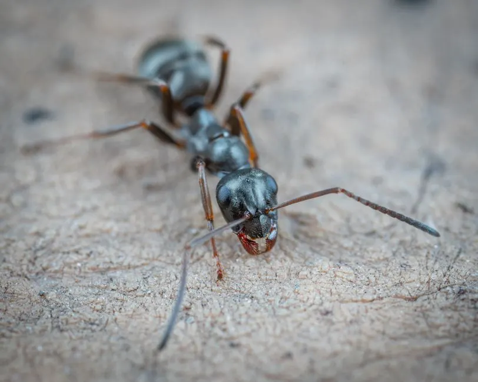

Why do I keep seeing ants in my Corona kitchen
Ants in your Corona kitchen keep coming back because they're following pheromone trails to food, water, and warm shelter. Here's how to stop them for good.

You keep seeing ants in your Corona kitchen because a pheromone trail is leading them straight to a food or water source, and the colony is sending foragers back along that same invisible line every day. Killing the ants you see does nothing to the nest, so the trail gets re-established within hours. This post explains exactly why that happens in Corona homes, what attracts the ants in the first place, and how to break the cycle for good.
The real reason ants keep showing up in your Corona kitchen
Why do I keep seeing ants in my Corona kitchen every morning? Because the ants you're seeing are foragers from a colony that has found a reliable resource inside your home - usually a crumb trail, a sticky drip under the fridge, or a pet bowl left out overnight. They lay down a pheromone trail as they walk, and other workers follow it. The trail gets stronger with every trip.
In Corona, the two species we deal with most often in kitchens are Argentine ants and odorous house ants. Argentine ants are the small, uniform brown ants that march in tight lines along counter edges and baseboards. Odorous house ants are slightly larger and give off a rotten-coconut smell when crushed. Both nest outdoors in soil or under concrete slabs and send workers inside through cracks, utility penetrations, and gaps under doors.
Once a trail is established, it can persist for weeks even if you wipe it away. The ants simply re-scent it. That's why a single ant sighting in the morning often turns into a full line by afternoon.
What actually attracts ants to a Corona CA kitchen
Ants in a Corona kitchen are attracted by three things: food, moisture, and warmth. Corona's climate - hot, dry summers and mild winters - pushes ants indoors looking for water more than most homeowners realize. A single drip under the dishwasher or a slow leak at the sink supply line is enough to sustain a colony.
Here's what we find most often when we inspect kitchens in Corona:
- Pet food bowls left out between meals. Dry kibble and canned food both draw ants within hours.
- Sink and dishwasher moisture. Even a small amount of standing water under the cabinet creates a reliable water source.
- Recycling bins and trash cans with sticky residue on the outside, not just the inside.
- Fruit bowls and open cereal boxes. Ripe fruit and sugary grains are prime targets.
- Grease buildup on the stove hood, backsplash, and the gap between the counter and the wall.
Corona homes built in the 1980s and 1990s - common in neighborhoods like South Corona - often have original plumbing penetrations that were never sealed. Those gaps under the sink and behind the dishwasher are open highways for ants. If you're dealing with other pests using the same entry points, our general pest control Corona CA service covers ants, spiders, and occasional invaders in one visit.
Why DIY sprays and baits fail in Corona
Store-bought sprays kill the ants you can see, but they also destroy the pheromone trail - which sounds helpful until you realize the colony just reroutes. You've removed the visible line without removing the nest. Within a day or two, a new trail appears somewhere else in the kitchen.
Baits work better, but only if you use the right bait for the species and place it where the ants are actually foraging. Most homeowners put bait on the counter where they saw ants. The ants are usually trailing along the floor edge or behind the toe kick. Wrong placement means the colony never takes the bait back to the nest.
There's also a timing problem. Argentine ants in Corona often have multiple queens and satellite nests, so killing one nest doesn't end the infestation. You need to treat the trails, the nests, and the entry points together. That's why we recommend professional ant control Corona CA when you've seen ants for more than three or four days in a row.
How to get rid of kitchen ants in Corona fast
If you want to stop ants in your Corona CA kitchen this week, start with sanitation and exclusion, then treat the colony. Here's the sequence that works:
- Clean the trail. Wipe the ant line with soapy water and dry it completely. This removes the pheromone. Do it every time you see a new line.
- Cut off food and water. Put pet food away between meals. Fix drips under the sink. Empty recycling nightly.
- Seal entry points. Use caulk or expanding foam on gaps around pipes, under baseboards, and at the bottom of exterior doors. A 1/8-inch gap is enough for Argentine ants.
- Place bait correctly. Put gel or liquid bait stations along the floor edge, behind the toe kick, and near the entry point - not on the counter. Let the ants take it back to the nest.
- Give it 5-7 days. Baiting takes time. If the trail is still active after a week, the colony is larger or there are multiple nests.
For fast knockdown, a professional treatment can clear visible activity in 24-48 hours and then follow up with a residual barrier. If you're also seeing roaches or spiders in the same kitchen, those pests often share the same entry points. Our cockroach control Corona CA and spider control Corona CA services address the same cracks and voids.
Common mistakes that keep ants coming back
The biggest mistake is spraying the trail and assuming the problem is solved. The colony is still outside, and the workers will find a new way in. Other mistakes we see regularly in Corona kitchens:
- Using the wrong bait. Some baits work on sugar-feeding ants, others on protein-feeding ants. Argentine ants switch preferences depending on the season.
- Cleaning with vinegar or citrus. These can disrupt trails temporarily, but they don't kill the colony and may cause ants to scatter into new areas.
- Ignoring outdoor nests. Argentine ants often nest under concrete slabs, in mulch, or along foundation walls. If you only treat inside, they'll come back.
- Leaving moisture unresolved. A slow leak under the sink is an open invitation. Fix the plumbing before you treat the ants.
- Treating once and stopping. Ant infestations in Corona usually need a follow-up at 14-21 days to catch newly hatched workers.
We see this pattern constantly in older homes around pest control in Downtown Corona, where mature landscaping and original construction mean plenty of cracks and voids for ants to exploit.
When to call a professional for ant control in Corona
Call a professional when you've seen ants for more than a week, when you've tried bait and it didn't work, or when you're finding ants in multiple rooms. Those are signs of a colony that's already established inside the structure, not just a few foragers wandering in.
Our technicians treat the trails, the nests, and the entry points in one visit. We use a combination of non-repellent residual and targeted bait, and we schedule a follow-up to make sure the activity is gone. If you're in South Corona or the older parts of town, we can usually get to you same day. For homes in pest control in South Corona, we often find ants trailing from exterior planters and expansion joints - we treat those at the source.
We also check for moisture issues and seal what we can while we're there. It's not a separate service call; it's part of doing the job right.
Frequently Asked Questions
Why do ants keep coming back in my Corona kitchen?
Ants keep coming back because the colony is still alive outside and the pheromone trail gets re-established. Killing visible ants without treating the nest and entry points means new foragers return within 24-48 hours. You need to break the trail and eliminate the source.
What attracts ants in a Corona CA kitchen?
Food, moisture, and warmth attract ants. In Corona, the dry climate pushes ants indoors looking for water - a drip under the sink or a pet bowl left out is enough. Grease, crumbs, and recycling bins are also common draws.
How do I get rid of ants in my Corona kitchen fast?
Clean the trail with soapy water, cut off food and water, seal entry points, and place bait along the floor edge. If activity continues past 5-7 days, call a professional. A pro treatment can clear visible ants in 24-48 hours.
Do I need an exterminator for ants in Corona California?
If you've seen ants for more than a week, tried bait without success, or found them in multiple rooms, yes. A licensed exterminator can treat the nest and entry points in one visit and follow up to confirm the infestation is gone.
Get help with pest control in Corona
If ants are showing up in your Corona kitchen every morning, we can stop them at the source. Our team treats the trails, the nests, and the entry points - and we follow up to make sure they stay gone.
Call Pest Control Pros at 951-257-7625 to schedule your ant inspection and same-day treatment.